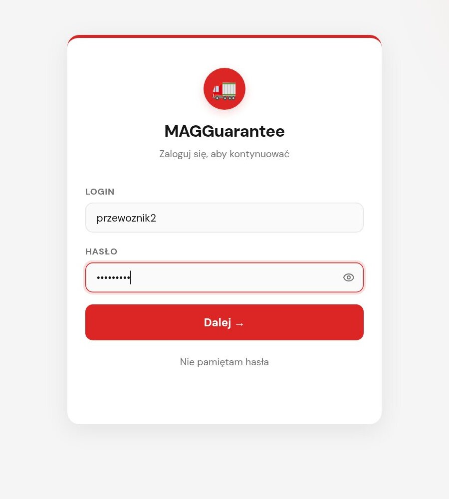
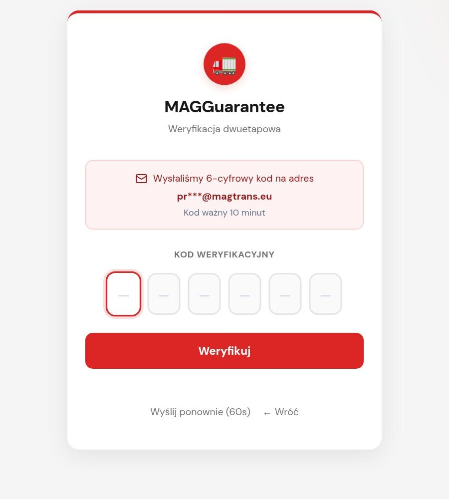
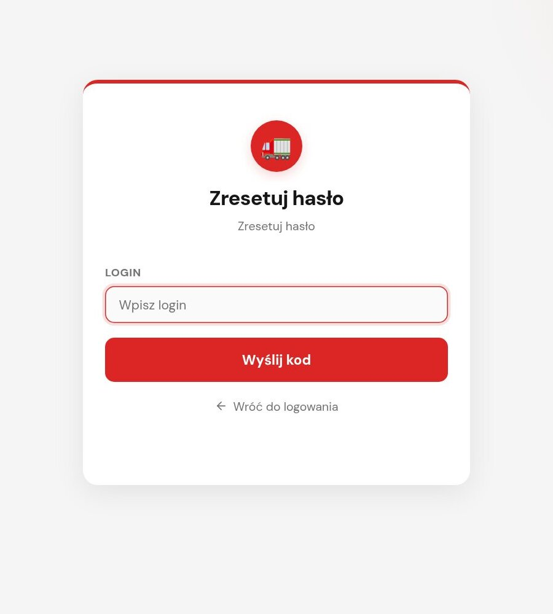
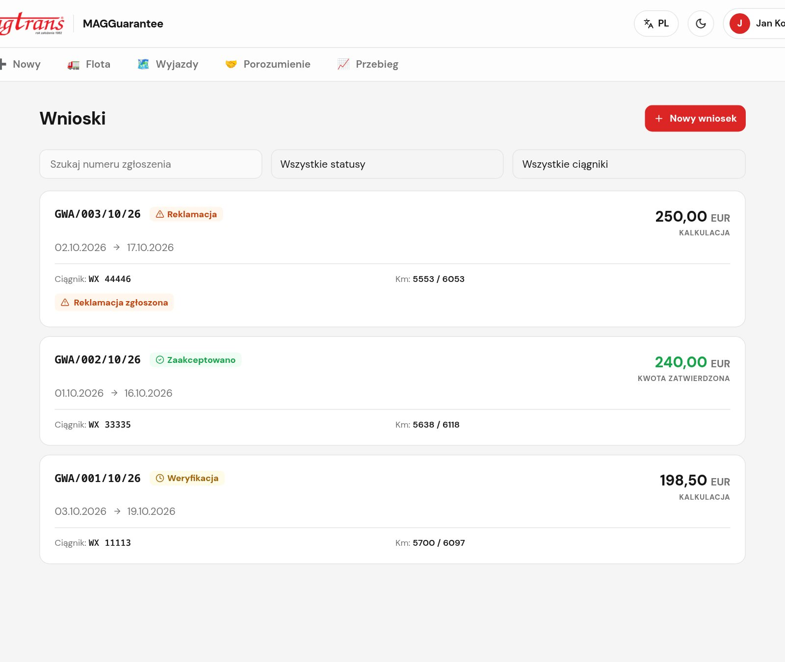
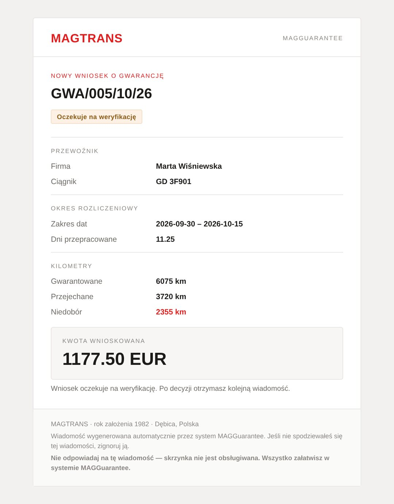

Osobne instrukcje dla ról: 01 Przewoźnik · 02 Opiekun · 03 Opiekun wniosków · 04 Weryfikator · 05 Eksport · 06 Planista · 07 Dyspozytor · 08 Administrator. Najwięcej szczegółów jest w instrukcjach przewoźnika i opiekuna.
MAGGuarantee to wewnętrzny system MAGTRANS do obsługi gwarancji kilometrowej dla przewoźników-podwykonawców.
MAGTRANS gwarantuje przewoźnikowi określoną liczbę kilometrów na każdy dzień pracy ciągnika. Jeżeli w danym okresie ciągnik przejechał mniej, niż gwarantowano, przewoźnik otrzymuje dopłatę w EUR za brakujące kilometry.
System zastępuje arkusze i e-maile: każdy wyjazd, przebieg i wniosek jest w jednym miejscu, z historią i jasnym statusem.
Wypłata pieniędzy odbywa się poza systemem. MAGGuarantee zapisuje kwotę zatwierdzoną i numer zlecenia, na które zostanie wypłacona.
| Rola | Kto to jest | Co robi w systemie | Logowanie |
|---|---|---|---|
| Przewoźnik | firma-podwykonawca z ciągnikami i kierowcami | zgłasza wyjazdy, składa wnioski i reklamacje, podgląda flotę | login + hasło + kod e-mail |
| Opiekun | pracownik MAGTRANS (DAF) prowadzący grupę przewoźników | zakłada przewoźników i całą flotę, pilnuje dokumentów i porozumień | Google (konto @magtrans.eu) |
| Opiekun wniosków | pracownik weryfikujący wnioski (w systemie rola „pracownik”) | sprawdza wnioski, koryguje dane, akceptuje / odrzuca, rozpatruje reklamacje | |
| Weryfikator | pracownik kontrolujący ruch ciągników | wpisuje dzienny przebieg km, oznacza „w trasie” i „zjechał” | |
| Eksport | pracownik wystawiający zlecenia w SpedTrans | oznacza wyjazd jako „Załadowany” (z nr zlecenia) | |
| Planista | spedytor prowadzący konkretne ciągniki | podgląd floty i przebiegu, wnioski o przekazanie ciągnika | |
| Dyspozytor | dyspozytor zespołu prowadzącego | podgląd ciągników swojego zespołu i ich wyjazdów | |
| Administrator | osoba zarządzająca systemem | wszystko + użytkownicy, limity, zespoły, słowniki, audyt | konto lokalne |
Pozostałe role reagują na to, co zrobili opiekun i przewoźnik: eksport → weryfikator → opiekun wniosków. Dlatego instrukcje tych dwóch ról są najbardziej szczegółowe.
Gdy dopłata przekracza próg autoryzacji, wniosek przechodzi automatycznie w Czeka na autoryzację — decyzję można podjąć dopiero po wgraniu potwierdzenia od Maksima. Po zakończeniu przewoźnik ma 10 dni roboczych na zgłoszenie kolejnego wyjazdu.
| Status | Kto ustawia | Co oznacza | Co dalej |
|---|---|---|---|
| Zgłoszony | Przewoźnik | wyjazd zarejestrowany w systemie | przewoźnik może go jeszcze anulować; eksport wystawia zlecenie |
| Załadowany | Eksport | ładunek znaleziony, zlecenie ze spedu wystawione (wymagany nr zlecenia) | eksport może cofnąć do „Zgłoszony”, dopóki ciągnik nie ruszy |
| W trasie | Weryfikator | ciągnik faktycznie wyjechał — zapisana data i godzina wyjazdu | weryfikator uzupełnia km na tablicy |
| Zjechał | Weryfikator | ciągnik wrócił — zapisana faktyczna data i godzina zjazdu (status końcowy) | przewoźnik może złożyć wniosek w ciągu 7 dni |
| Anulowany | Przewoźnik (tylko ze „Zgłoszony”) lub administrator | wyjazd nie doszedł do skutku (status końcowy) | — |
| Status | Skąd się bierze | Kto działa | Uwagi |
|---|---|---|---|
| Weryfikacja | przewoźnik złożył wniosek | Opiekun wniosków | najpierw „Zapisz weryfikację”, potem decyzja; termin 7 dni roboczych |
| Czeka na autoryzację | automatycznie, gdy dopłata > próg autoryzacji | Opiekun wniosków + Maksim | decyzja po wgraniu zrzutu potwierdzenia Maksima |
| Zaakceptowano | decyzja „Zaakceptuj” (nr zlecenia, data, kwota) | — | przewoźnik ma 48 h na reklamację, jeśli nie wypłacono całej kwoty |
| Odrzucono | decyzja „Odrzuć” (wymagany powód) | — | przewoźnik ma 48 h na reklamację |
| Reklamacja | przewoźnik złożył reklamację | Opiekun wniosków | „Uznaj” lub „Odrzuć” reklamację; status wraca do poprzedniego, wynik widać osobno |
Okres 13 dni roboczych, pierwszy dzień od 08:00, ostatni do 14:00.
Dni zaliczone ≈ 11,25 · km gwarantowane ≈ 6 075 km
Przejechano 3 720 km → niedobór 2 355 km
Dopłata = 2 355 × 0,50 € = 1 177,50 €
Opiekun wniosków może odjąć godziny postoju/przestoju — zmniejszają one liczbę dni zaliczonych proporcjonalnie w miesiącach z gwarancją.
Jeśli w którymś miesiącu okresu gwarancja jest wyłączona (0 km/dzień), przebieg bierze się z tablicy km weryfikatora, a nie z deklaracji przewoźnika. Wniosku nie można zaakceptować, dopóki tablica ma luki.
Nowy Rok · Trzech Króli · Święto Pracy · 2.06 (IT) · 14.07 (FR) · 21.07 (BE) · 15.08 · 3.10 (DE) · 26.10 (AT) · 1.11 · 11.11 · 8.12 · 25–26.12 · Wielki Piątek · Poniedziałek Wielkanocny · Wniebowstąpienie · Zielone Świątki · Boże Ciało.
Lista wyłączonych dni jest widoczna w kalkulacji: sekcja Dni wyłączone (święta / zakaz UE).
Ważne: jeśli dzień graniczny wypada w weekend, święto lub zakaz UE, godzina nic nie zmienia — taki dzień i tak się nie liczy. To celowe zachowanie, a nie błąd. Kalkulacja pokazuje wtedy „· nie zaliczony”.
| Czego dotyczy | Zasada | Kogo dotyczy |
|---|---|---|
| Zgłoszenie wyjazdu | data wyjazdu nie może być w przeszłości (10 min tolerancji) | Przewoźnik |
| Kolejny wyjazd (porozumienie) | w ciągu 10 polskich dni roboczych od zjazdu; przypomnienia 3 i 1 dzień przed | Przewoźnik, Opiekun |
| Złożenie wniosku | do 7 dni od faktycznego zjazdu (data weryfikatora) | Przewoźnik |
| Długość okresu wniosku | maks. 90 dni, min. 10,00 dni przepracowanych | Przewoźnik |
| Kolejny wniosek na ten sam ciągnik | po 6 dniach od poprzedniego (odrzucone się nie liczą) | Przewoźnik |
| Średni przebieg | maks. 2000 km dziennie | Przewoźnik |
| Weryfikacja wniosku | 7 polskich dni roboczych od złożenia (codzienny e-mail o 07:00) | Opiekun wniosków |
| Reklamacja | do 48 godzin od decyzji, jedna na wniosek, kwota ≤ wnioskowana − wypłacona | Przewoźnik |
| Dokumenty | alert od 7 dni przed wygaśnięciem (OCP, licencja, prawo jazdy, karta paliwowa) | Opiekun |
| Tablica km | wpis możliwy tylko za dni minione (dziś i przyszłość zablokowane) | Weryfikator |
| Kod logowania | ważny 10 min, 5 prób, ponowna wysyłka co 60 s | wszyscy z hasłem |


Przycisk Google nad formularzem — tylko konto @magtrans.eu. Rola wynika ze stanowiska w MAGSpace (lub nadaje ją administrator). Bez kodu SMS/e-mail.
10 błędnych haseł = blokada konta na 15 min. 5 błędnych kodów = blokada 5 min. Sesja trwa do 30 dni.

Po założeniu konta lub resecie przez opiekuna/administratora trzeba przy pierwszym logowaniu ustawić własne hasło — ekranu nie da się pominąć.
Zmiana hasła w dowolnym momencie: menu użytkownika → Zmień hasło.

Kliknięcie aktywnej zakładki/pozycji menu odświeża dane.
| Zdarzenie | Kto dostaje e-mail |
|---|---|
| Kod logowania / reset hasła | osoba logująca się |
| Konto utworzone / hasło zresetowane | nowy użytkownik lub przewoźnik (login + hasło tymczasowe) |
| Nowy wyjazd | przewoźnik (potwierdzenie) + wiadomość w Google Chat dla zespołu |
| Wyjazd „Załadowany” | przewoźnik — „Zlecenie {nr} — ciągnik {nr rej.}” |
| Nowy wniosek | przewoźnik, opiekun wniosków, admin, opiekun przewoźnika, planista (+ lider) |
| Decyzja w sprawie wniosku | przewoźnik + te same osoby wewnętrzne |
| Prośba o autoryzację | Maksim (odpowiedź trafia do opiekuna wniosków) |
| Reklamacja złożona / rozpatrzona | opiekun wniosków i admin / przewoźnik |
| Przypomnienie o zgłoszeniu wyjazdu | przewoźnik — 3 i 1 dzień roboczy przed terminem |
| Dzienny przegląd porozumień | opiekun — terminy i naruszenia jego przewoźników |
| Dzienny przegląd weryfikacji (07:00) | opiekunowie wniosków — wnioski po terminie i z bliskim terminem |
| Pojazdy do usunięcia, raport tygodniowy | administrator |

| Pojęcie | Znaczenie |
|---|---|
| Wyjazd (delegacja) | jedna trasa ciągnika: od zgłoszenia, przez wyjazd, do zjazdu do bazy |
| Wniosek (GWA/NNN/MM/RR) | prośba przewoźnika o dopłatę gwarancyjną za jeden zakończony wyjazd |
| Porozumienie | zgoda na objęcie ciągnika gwarancją; bez niej nie ma wniosków, z nią — obowiązek zgłaszania wyjazdów |
| Tablica km | dzienny przebieg każdego ciągnika wpisywany przez weryfikatora: Jechał (km) / Nie jeździ |
| Km gwarantowane | ile km ciągnik powinien przejechać w okresie wg limitów |
| Niedobór / dopłata | brakujące km × stawka €/km = kwota dla przewoźnika |
| Nr zlecenia ze spedu | numer zlecenia wystawionego w SpedTrans przy statusie „Załadowany” |
| Numer zlecenia (wniosku) | zlecenie, na które zostanie wypłacona zatwierdzona dopłata |
| Reklamacja | odwołanie przewoźnika od decyzji, w ciągu 48 h |
| Opiekun vs Opiekun wniosków | opiekun prowadzi przewoźników i flotę; opiekun wniosków (rola „pracownik”) weryfikuje wnioski |
| Zespół prowadzący | zespół dyspozytorów (kod N.N.N), do którego przypisany jest ciągnik |
| Lider | dodatkowa flaga; lider planistów zatwierdza przekazania ciągników swoich planistów |